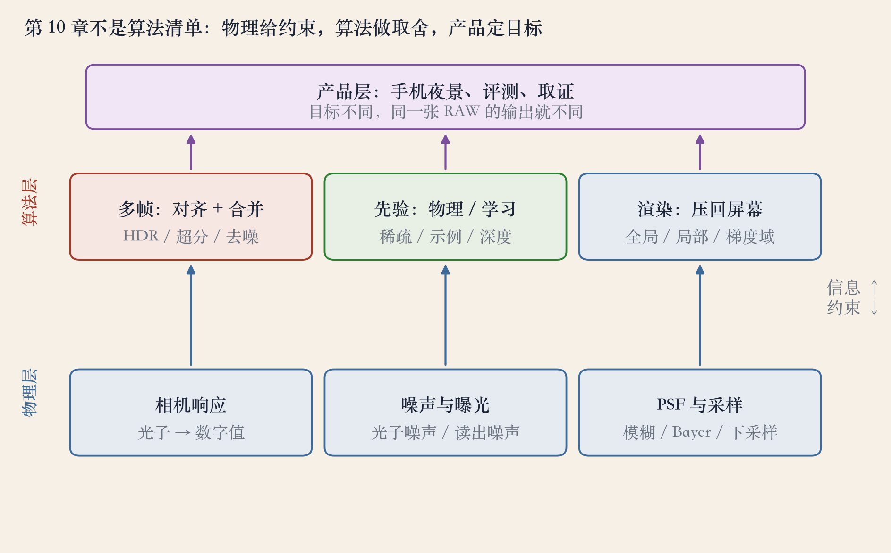
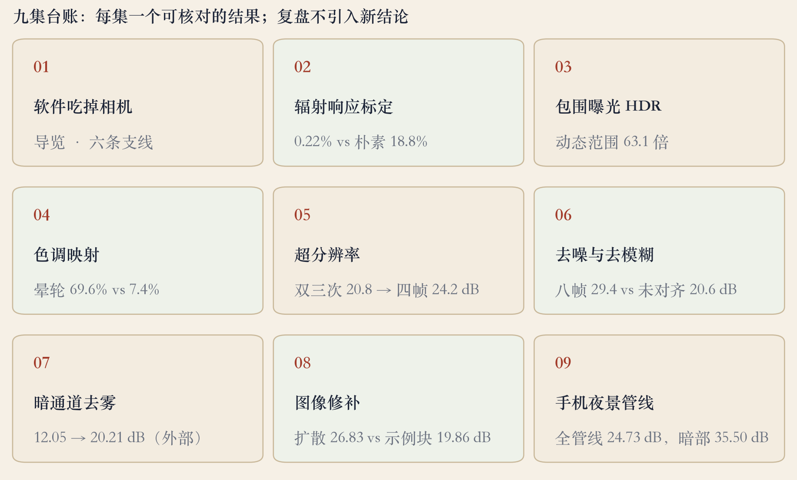
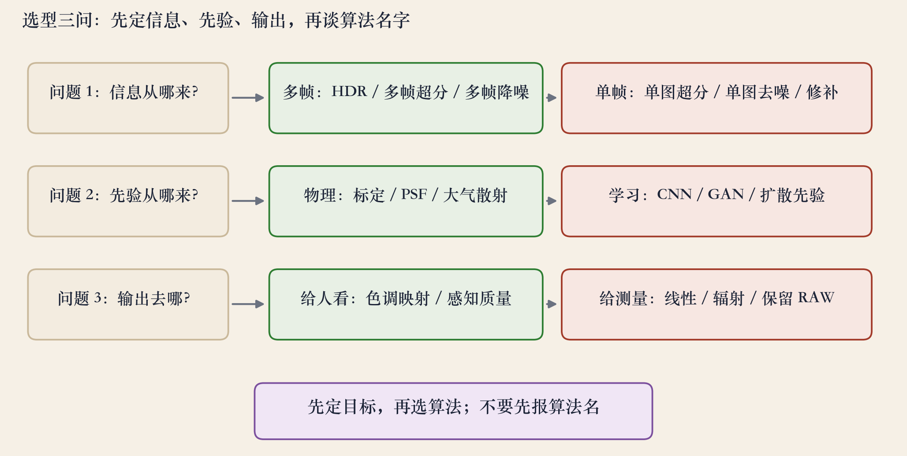

第 10 章 · 复盘
这一章：物理、算法、产品
- 计算摄影用一张或多张照片，做出传统成像做不到的图像。
- 物理给约束，算法做取舍，产品定目标。
- 九集放回同一条链：光进来，信息补上，给谁看。
依据：原书第 609 页
复盘地图 · 三层结构
三层：物理、算法、产品
- 底层物理：相机响应、噪声、PSF 与采样。
- 中层算法：多帧对齐合并、先验、渲染。
- 顶层产品：手机夜景、评测、取证。
- 信息从下往上走，约束从上往下压。
依据：本集实验

三层结构：物理给约束，算法做取舍，产品定目标｜程序生成，未用教材或论文原图
物理层 · 先量边界
物理层：先量清数据的边界
- 三样东西影响光变数字：辐射响应、暗角、点扩散函数。
- 光度标定是后面很多算法的前提。
- 高光饱和救不回，暗部光子太少。
- 放大暗部，只会放大噪声。
依据：原书第 609–610 页
算法层 · 多帧
多帧：把信息补回来
- HDR 用多张曝光捕获完整亮度范围。
- 分辨率与画质，可靠合并多张照片提升。
- 动态范围 63.1 倍；四帧超分 20.8 升到 24.2 dB。
- 八帧去噪 29.4 dB，未对齐 20.6 dB。
依据：原书第 609 页；本集实验
多帧的代价
对齐错出鬼影
运动物体要剔除
帧数有边际收益
算法层 · 先验
先验：信息不够时怎么猜
- 也可以用复杂图像先验或深度网络提升画质。
- 超分和去噪、去模糊、去马赛克同源。
- 稀疏导数抑制振铃，BM3D 学噪声分布。
- 先验越强，越可能补错。
依据：原书第 609/673 页；本集实验
先验从哪来
物理模型：可解释
学习模型：靠数据
问一句：恢复还是编造
产品层 · 夜景
产品层：夜景把一切串起来
- 手机夜景：测光、连拍、对齐、RAW 合并。
- 接着去马赛克、超分、去噪、色调映射。
- 一共十八步，是本课整理的工程顺序。
- 难点是先做哪步、代价是什么。
依据：原书第 627/630/645/646 页
取舍
暗部干净，高光可能裁切
噪点没了，纹理可能变塑料
十八步不是厂商流程图
选型 · 三问
选型：先问三件事
- 信息从哪来：能多帧就多帧。
- 先验从哪来：有物理模型就用物理。
- 输出去哪：给人看要色调映射。
- 给测量要线性、辐射、保留 RAW。
依据：本集复盘
复盘 · 九集台账
九集台账：看数字的边界
- 标定误差 0.22%，朴素平均 18.8%。
- 动态范围 63.1 倍；晕轮 69.6% 降到 7.4%。
- 超分 20.8 升到 24.2 dB；八帧去噪 29.4 dB。
- 去雾 12.05 升到 20.21 dB；夜景 24.73 dB。
依据：本集实验

九集台账：每集一个可核对结果｜程序生成，未用教材或论文原图
工程复盘 · 失败边界
失败边界：比算法名更值得记
- 对齐错，亮边双层；运动不剔除，出鬼影。
- 长曝光高光裁切；去马赛克差出伪彩。
- 降噪过头变塑料；色调映射过头出光晕。
- 放大看高光、暗部、运动物体与细纹理。
依据：原书第 625/630/646 页
选型 · 决策图
三问画成一张图
- 信息、先验、输出，各有两个方向。
- 先选方向，再选算法。
- 夜景第一问选多帧。
- 医学与取证保留 RAW 和线性。
依据：本集复盘

三问：信息 / 先验 / 输出，先定方向再选算法｜程序生成，未用教材或论文原图
复盘 · 课程边界
没讲什么，也要说清楚
- 闪光合成、抠图与合成、纹理合成前半段。
- 视频抠图只在导览和修补里带到。
- 本章重点在标定、HDR、色调、超分去噪、去雾、修补与夜景。
- 后续补专题，matting、alpha、trimap 优先。
依据：原书第 609 页
收束 · 下一集
三层、三问、失败边界
- 第 10 章是三层结构，不是算法清单。
- 多帧补信息，先验补病态，渲染定输出。
- 每个算法都有失败边界，指标分开看。
- 下一集进第 11 章：从照片到三维。
依据：原书第 609 页；移交第 11 章
三句话
物理 / 算法 / 产品
多帧 / 先验 / 渲染
指标分开看